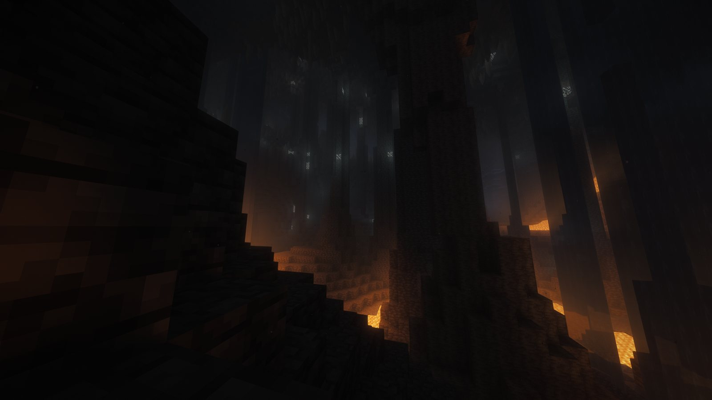
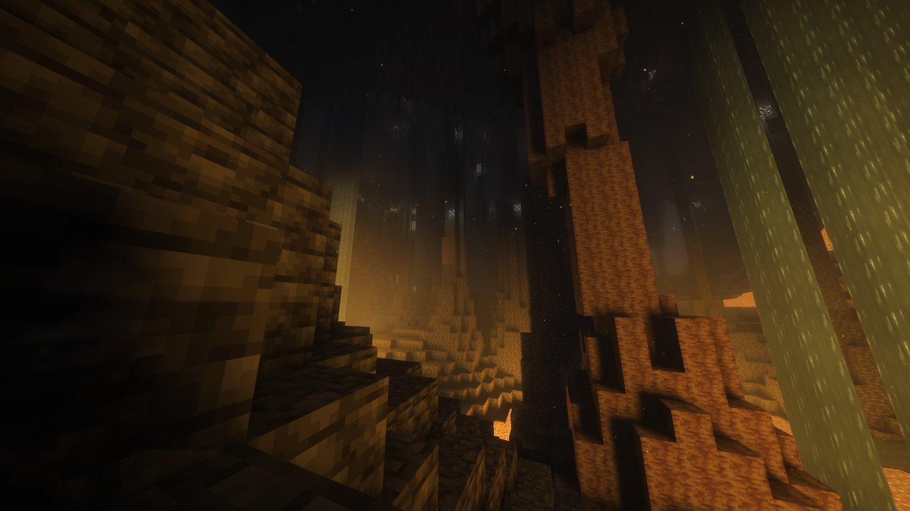

Minecraft 26.3 · Fabric
JRAFT.
The Minecraft you know. Made to feel new.
New lands to explore, light that glows and bounces, animals that move like they're alive, and footsteps you can hear on every block. One small app sets it all up, keeps it current and puts you on the JRAFT server.
One cave. Two shaders.
The same lava-lit spot, a minute apart. Drag the line, or use the arrow keys.


Rethinking VoxelsComplementary + EuphoriaRethinking Voxels
Light is traced through the blocks themselves. Lava floods the cave with warm orange that climbs the walls, torches cast shadows of their own, and stained glass tints the light that passes through it.
Complementary Reimagined + Euphoria Patches
The everyday choice. Darker and moodier underground, with soft fog, glossy water and long golden sunsets above. Euphoria adds its own touches, like auroras and snow that settles on the ground.
Complementary is on from the start. For Euphoria's extras, open Video Settings → Shader Packs and pick the copy with EuphoriaPatches in its name; Euphoria makes it the first time the game runs. Rethinking Voxels sits in the same list. Euphoria can't patch it.